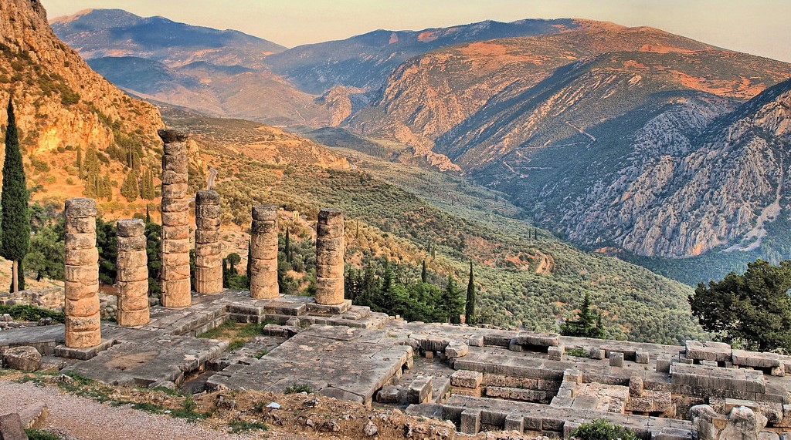
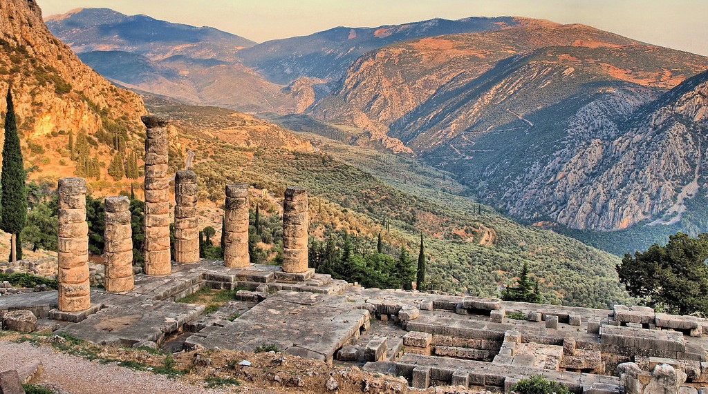

On la croit européenne, elle raisonne en orientale ; on y vient pour ses îles, mais c'est aussi l'un des pays les plus montagneux d'Europe ; la démocratie y est née, mais l'anarchie a su s'y faire une place. Aucun doute : la Grèce est la terre de tous les paradoxes. A vous de l'apprécier dans toute sa dimension.
Lieu de naissance de la tragédie et de la démocratie, la Grèce peut se prévaloir d'un héritage incomparable. Des brumes d'Athènes au soleil éclatant des îles, vous pourrez contempler le centre du monde à Delphes, les innombrables colonnes de l'île sacrée de Délos, les fresques des palais minoens en Crète, et les traces de la légendaire Atlantide à Santorin.
Au carrefour du mythe et de l'archéologie, les vestiges du passé sont inépuisables. Farouches gardiens de la tradition, les Grecs savent pourtant s'amuser : leur goût pour la fête remonte à Dionysos. Ajoutez à cela le soleil et une mer translucide, et vous l'aurez compris : la Grèce est aussi un lieu de détente et de plaisirs. Dans une taverne en bord de mer, sur une place ombragée ou dans l'atmosphère enfiévrée d'une discothèque, aucune chance d'y échapper : les dieux de la Grèce vous ont déjà ensorcelé.
 © Sotheby

© Brendan van Son
© Sotheby

© Brendan van Son
La Grèce centrale recèle au moins trois sites remarquables. “Centre du monde†pour les Grecs anciens, le sanctuaire d’Apollon à Delphes est aujourd’hui un des sites les plus visités du pays. Les Météores, ces impressionnants pitons rocheux couronnés de monastères, impressionnent également, et pas seulement les passionnés d’escalade. Enfin, la péninsule du Pélion, terre mythique de Jason et des Argonautes, est sillonnée de chemins pluriséculaires reliant de ravissants hameaux, avec des criques et des plages qui n’ont rien à envier à celles des îles ! Le centre de la Grèce réserve aussi d’autres surprises, comme les vallées et les prairies alpines du Pinde, un massif montagneux de l’Épire, où skier l’hiver et où trouver la fraîcheur en été. À cela s’ajoutent les plaisirs de la table et, surtout, la gentillesse et le sens de l’hospitalité des habitants.
text pris sur © Lonely Planet 'Grèce'